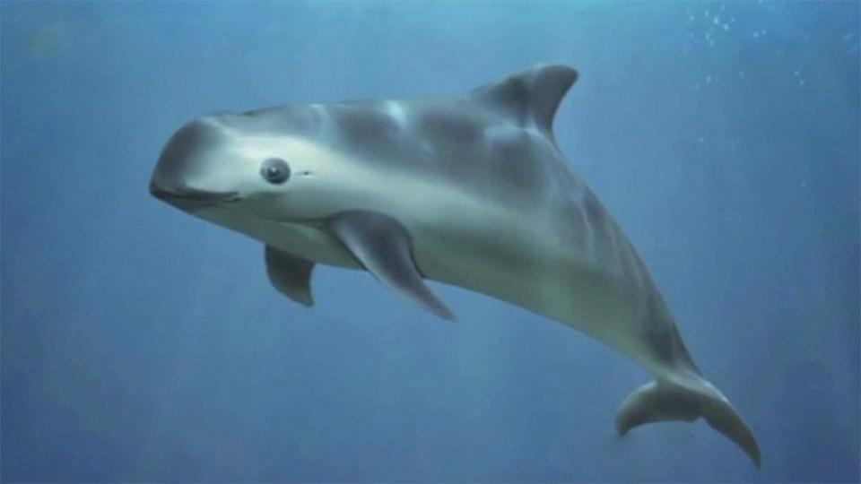
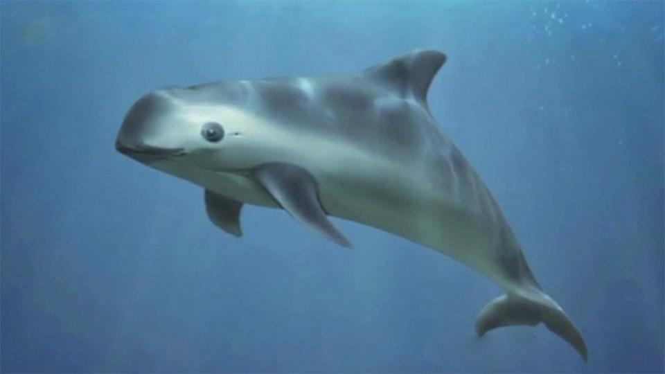

El delfin
Los delfines y sus caracteristicas
Los delfines son un tipo de mamíferos cetáceos pertenecientes a la familia Delphinidae. Pueden vivir más de 30 años en cautividad y tienen una longitud de 3,5 metros aproximadamente. En la naturaleza, estos nadadores elegantes pueden alcanzar velocidades de más de 30 kilómetros por hora. Durante sus desplazamientos surgen a menudo a la superficie del mar para respirar, haciéndolo una media de dos o tres veces por minuto. Los delfines Viajan en grupos sociales y se comunican entre sí por un complejo sistema de chirridos y silbidos que del mismo modo les sirve para ecolocalizar a sus presas. Pueden producir hasta 1.000 "ruidos de clic" por segundo. Estos sonidos viajan bajo el agua hasta que encuentran objetos, luego regresan a sus remitentes de delfines, revelando la ubicación, tamaño y forma de su objetivo. Se trata de animales muy inteligentes que no dejan de sorprender a los científicos pues han mostrado capacidades de aprendizaje y cognición muy superiores a las de otras especies.
Distribucion y habitad
El delfín común es una especie oceánica que, se encuentra distribuida en las aguas tropicales, templadas y frías del océano Atlántico y Pacífico. Sin embargo, no hay datos que confirme su presencia en aguas del Océano Índico. Las poblaciones de delfines, aparentemente aisladas, se localizan en algunos mares cerrados como son el Mar Mediterráneo o el Mar Rojo. Se pueden encontrar tanto en aguas cercanas a la costa como a miles de kilómetros de esta. A pesar de tener una distribución bastante estable en algunas áreas, muchas poblaciones se mueven estacionalmente y muestran picos locales de abundancia en diferentes épocas del año. Normalmente se localizan en aguas con una temperatura superficial de 10 ºC a 28 ºC, temperaturas que limitan su rango de distribución tanto al norte como al sur.
Imagenes sobre Delfines
 
